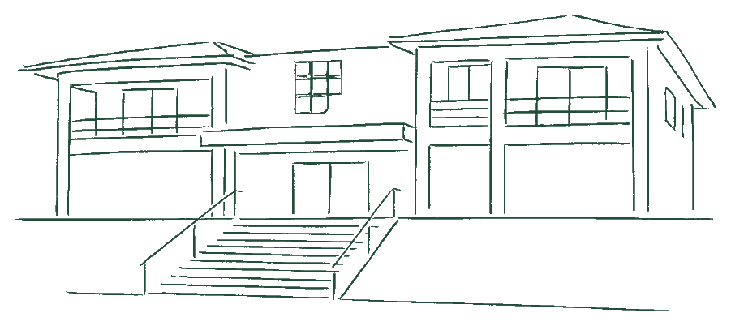
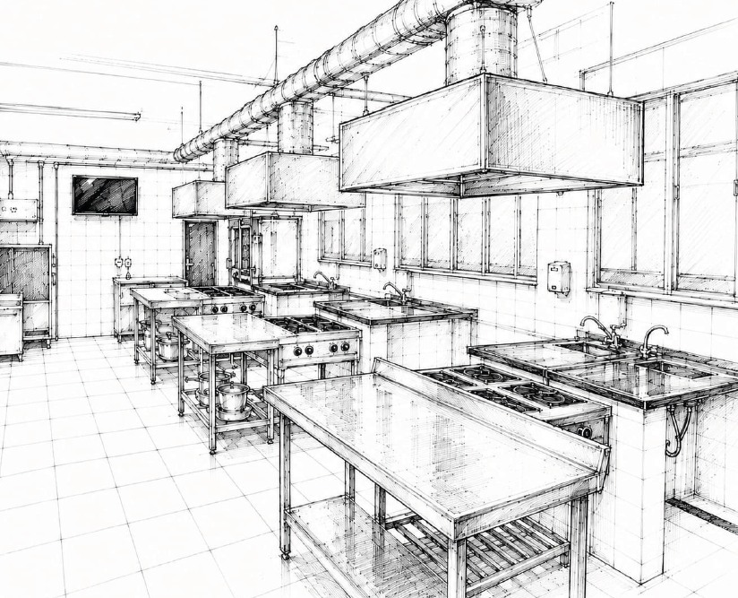

Ensino
Dois percursos, uma área de conhecimento.
Conheça a formação técnica concomitante e o curso superior de Tecnologia em Gastronomia.


A Gastronomia do Instituto Federal Fluminense nasce do encontro entre a educação pública e os saberes da Região dos Lagos. Em Cabo Frio, o Curso Técnico em Gastronomia e a Graduação em Tecnologia em Gastronomia formam profissionais para atuar em restaurantes, escolas, hospitais e outros espaços onde a alimentação sustenta a vida cotidiana. Em cozinhas pedagógicas, laboratórios e salão didático, técnica, ciência e gestão dialogam com a pesca, os ingredientes, as tradições e o trabalho das comunidades. Mais do que preparar refeições, nossos estudantes aprendem a compreender a cadeia dos alimentos, valorizar quem nela trabalha e contribuir para o futuro da região.

Do conhecimento técnico à gestão e à pesquisa, a Gastronomia encontra no território parte fundamental de sua formação.
Conheça a formação técnica concomitante e o curso superior de Tecnologia em Gastronomia.
Projetos, encontros e atividades que aproximam estudantes, pesquisadores e comunidades da Região dos Lagos.
Veja a planta do bloco, conheça os ambientes de ensino e consulte as orientações para as aulas.

Consulte o projeto pedagógico da formação técnica.
Consultar PPC ↗Consulte o projeto pedagógico da graduação tecnológica.
Consultar PPC ↗Conheça projetos de extensão, eventos históricos e experiências com as comunidades da região.
Eventos de Gastronomia e datas acadêmicas do IFF, em uma agenda com fontes identificadas.
O calendário oficial do campus reúne os prazos e os períodos letivos. A agenda acima destaca datas selecionadas, sem substituir esse documento.
Consultar calendário acadêmico do IFF ↗Acompanhe os registros da Gastronomia, das aulas às atividades de pesquisa e extensão.

Registros de atividades e encontros gastronômicos do campus Cabo Frio - RJ.

Os espaços de aprendizagem e o cotidiano da formação culinária.

O laboratório como lugar de trabalho, convivência e aprendizagem.
O GASTROIFF reúne informações dos cursos de Gastronomia. Para conhecer os demais cursos, serviços, editais e notícias institucionais, visite o portal oficial do campus.
Escolha o curso para enviar sua mensagem diretamente à coordenação responsável.
Conheça o projeto e acesse materiais das práticas, oportunidades profissionais e pesquisas sobre estudantes e egressos(as).
Conheça a iniciativa acadêmica, seus objetivos e sua relação com a sociedade.
Conhecer o GastroIFF →Biblioteca de práticas e materiais de apoio aos cursos.
Acessar as fichas →Espaço dedicado à divulgação de oportunidades profissionais.
Ver oportunidades →Relatórios e indicadores sobre estudantes, egressos(as) e trajetórias profissionais.
Acessar observatório →